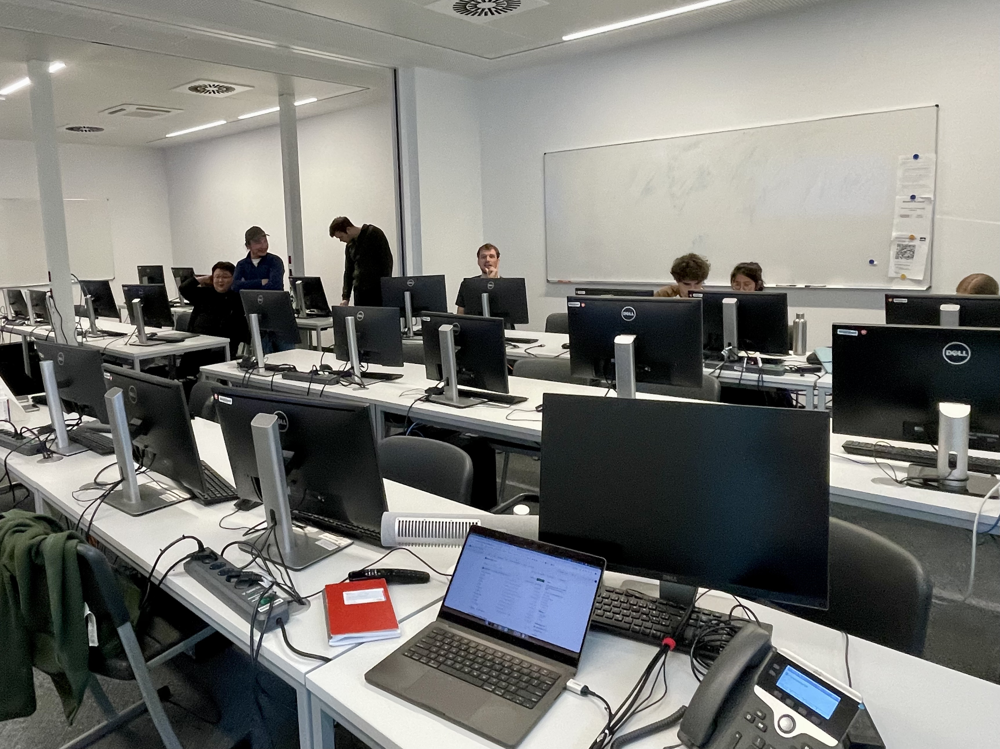

Back to News List
Teaching at the Uni. of Potsdam

Computer room of Uni. of Potsdam.
When and Where?
2026-05-12, Potsdam, Germany
What I have done?
As part of the preparation for the module
Machine Learning Applications in Geosciences,
organized by Dr. Hui Tang for Master’s students at the University of Potsdam,
I contributed to the section on time-series data. All teaching materials, including slides and Jupyter
notebooks, can be found
here.
During this course, I systematically used seismic data as an example to explain:
(1) data structure,
(2) problem formulation,
(3) selection of machine learning/deep learning models,
(4) training and testing procedures,
and (5) future directions for applying this framework.
The students enjoyed the course a lot, and their enthusiasm made me reflect on how to better translate the
latest research to a broader audience.
I hope they will apply the ideas and skills they learned to develop their own projects.